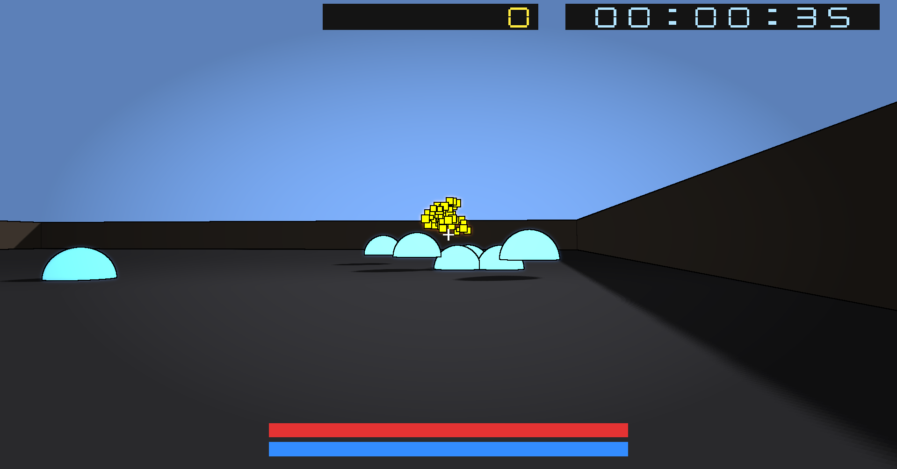

Stylised OpenGL Arena Game
A real-time OpenGL action scene built in C++, combining gameplay systems with stylised rendering techniques including toon shading, shadow mapping, and post-processing effects.
Overview
This project is a small-scale arena game built using OpenGL, extending a basic coursework scene into a fully interactive gameplay experience. The focus was to integrate gameplay systems such as combat, AI, and resource management with a multi-pass rendering pipeline, combining stylised shading techniques with real-time effects. The final result demonstrates how rendering techniques can support gameplay presentation rather than existing purely as isolated visual features.
Key Features
- First-person movement with jumping and sprinting
- Fireball-based combat system with particle effects
- Enemy AI with basic pursuit behaviour
- Mana system with regeneration and resource management
- Toon shading with integrated shadow mapping
- Shadow mapping with PCF filtering
- Post-processing pipeline (bloom, vignette, edge detection)
- Screen-space outline effect using depth + normal buffers
- HUD system displaying health, mana, score, and time
- Real-time toggling of visual effects for debugging and comparison



Technical Breakdown
Gameplay Systems
Implemented a set of gameplay systems including player movement, combat, and resource management. The player can move freely within the arena, jump, sprint, and attack using fireball projectiles. Fireballs consume mana, introducing a resource constraint that influences gameplay decisions.
Combat & Interaction
Developed a projectile-based combat system where fireballs are spawned, updated, and interact with enemies. Particle effects are used to enhance visual feedback, including fire trails and explosion effects upon impact.
Rendering Pipeline
Built a multi-stage rendering pipeline using OpenGL:
- Scene rendering pass with lighting
- Shadow mapping pass using a depth texture
- Post-processing stage for final image composition
This separation allows multiple visual effects to be layered while maintaining a structured rendering flow.
Toon Shading & Stylisation
Implemented a toon shading model by quantising lighting into discrete bands, creating a stylised, non-photorealistic look. Shadow information is integrated into the toon shader, allowing the scene to maintain depth while preserving the stylised aesthetic.
Shadow Mapping
Shadows are generated using a depth pass rendered from the light’s perspective. Percentage-closer filtering (PCF) is applied to smooth shadow edges and reduce aliasing artefacts.
Post-Processing Effects
A post-processing pipeline applies multiple screen-space effects:
- Bloom for bright light bleeding
- Vignette for visual focus
- Edge detection using depth and normal buffers
These effects are combined in a final composition pass before presenting the frame.
HUD & UI Systems
Implemented a HUD system displaying gameplay information including:
- Health
- Mana
- Score
- Time
The HUD is rendered as a screen overlay after the main scene rendering pass.
Architecture & Design
The project is structured to separate gameplay logic, rendering, and UI systems. This modular approach allows features such as rendering effects and gameplay mechanics to be developed and modified independently.
Challenges
One of the main challenges was integrating multiple rendering techniques into a single pipeline without conflicts, particularly when combining shadow mapping, toon shading, and post-processing. Managing OpenGL state and debugging shader interactions required careful sequencing of rendering passes. Another challenge was balancing gameplay systems with rendering performance, ensuring that visual effects did not negatively impact responsiveness.
What I Learned
This project significantly improved my understanding of:
- Multi-pass rendering pipelines
- Stylised shading techniques
- Integrating gameplay systems with rendering
- Debugging complex OpenGL and shader issues
It also reinforced the importance of structuring projects to support both visual and gameplay features effectively.